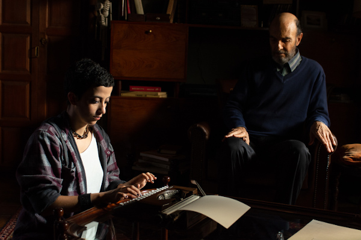

AOS OLHOS DE ERNESTO terá estreia online no Festival Espaço Itaú Play
Premiado pela crítica na 43ª Mostra Internacional de Cinema de São Paulo e pelo público no 23º Festival Internacional de Cine de Punta del Este, “Aos Olhos de Ernesto”, terá pré-estreia online no Festival Espaço Itau Play, mais novo projeto dos cinemas Espaço Itaú que destaca uma seleção de 19 filmes inéditos. O longa dirigido e roteirizado por Ana Luiza Azevedo (Antes Que O Mundo Acabe), ficará disponível nos dias 20 e 21 de junho, e poderá ser visto durante as 48 horas na página www.itaucinemas.com.br, com ingressos a R$10. O filme também será tema de uma live no instagram do Canal Brasil, neste sábado (20), às 17h, com a participação da diretora e da atriz Gabriela Poester, dando a oportunidade do público assistir e participar do bate papo na mesma data.
No Brasil, o filme tinha estreia marcada para abril, que foi adiada com a pandemia. Com distribuição da Elo Company, ganhará nova data de lançamento após a reabertura dos cinemas. Protagonizado pelo ator uruguaio Jorge Bolani (Whisky), é produzido pela Casa de Cinema de Porto Alegre. Enquanto isso, o filme ganha as telas de cinema no Japão em julho. “Aos Olhos de Ernesto” estreará na sala de arte Cine Switch Ginza, em Toquio, e de acordo com sua distribuidora local, Moviola, poderá ser exibido em 30 salas pelo país ao longo de seis meses.
Na trama, a solidão, a amizade, o amor e as redescobertas na terceira idade permeiam a história de Ernesto (Bolani). Aos 78 anos, o personagem, ex-fotógrafo uruguaio, se depara com uma crescente cegueira e as limitações diversas que acompanham a avançada idade. Viúvo e pai de filho único - Ramiro (Julio Andrade), que vive longe -, Ernesto ressignifica sua vida e os padrões da velhice ao conhecer a jovem Bia (Gabriela Poester), que o ajuda a descobrir o amor. Também no elenco, Jorge d’Elia, como Javier, o vizinho de Ernesto; Glória Demassi, que vive Lucía, o amor uruguaio do protagonista; e as participações de Mirna Spritzer, Áurea Baptista, Janaina Kremer, Celina Alcântara e Marcos Contreras.

Gabriela Poester e Jorge Bolani em AOS OLHOS DE ERNESTO - Foto: Fábio Rebelo
SINOPSE
Ernesto vem enfrentando as limitações da idade avançada como a solidão e a crescente cegueira, que ele acha que pode disfarçar de todos. Quando ficou viúvo, Ernesto aprendeu que envelhecer é ocupar os silêncios com um disco rodando, com os telefonemas do filho que mora longe, com as idas ao banco para buscar sua escassa aposentadoria, com rápidas visitas do vizinho Javier e a espera de uma nova carta de Lúcia. Mas Bia, uma descuidada cuidadora de cães, atropela a sua vida e coloca em risco seu metódico cotidiano. E Ernesto percebe que envelhecer pode ser rejuvenescer com a intensa companhia de uma menina que não tem nem trinta anos. Que a vida e o amor são possíveis, até para quem tem quase 80 anos.
FICHA TÉCNICA
Elenco: Jorge Bolani, Gabriela Poester, Jorge d´Elia, Julio Andrade, Glória Demassi, Áurea Baptista, Marcos Contreras
Direção: Ana Luiza Azevedo
Produção executiva: Nora Goulart
Produção: Casa De Cinema De Porto Alegre
Roteiro: Ana Luiza Azevedo, Jorge Furtado
Colaboração de roteiro: Vicente Moreno, Miguel Da Costa Franco
Direção de fotografia: Glauco Firpo
Direção de arte: Fiapo Barth, William Valduga
Montagem: Giba Assis Brasil
Música original: Leo Henkin
Som direto: Rafael Rodrigues
Desenho de som: Tiago Bello, Marcos Lopes
Mixagem: Tiago Bello
Figurinos: Rosângela Cortinhas
Caracterização: Britney Federline
Primeira assistente de direção: Laura Mansur
Direção de produção: Glauco Urbim
Patrocinador: ANCINE, BRDE, FSA, BNDES
Sobre a diretora
Diretora e roteirista. Formada em Artes Visuais pela UFRGS. Sócia da Produtora da Casa de Cinema de Porto Alegre. Dirigiu e roteirizou diversos longas, curtas, séries de TV, entre eles “Aos Olhos de Ernesto” (2019), “Primavera das Neves” (2017), “Antes Que O Mundo Acabe” - Melhor Longa APCA (2010), “Dona Cristina Perdeu a Memória” - Melhor curta CinePE (2002), “Três Minutos” - seleção oficial Cannes (2000) e Melhor Curta Brasília (1999), “Barbosa” - Melhor Curta Havana (1989), o telefilme e a série “Doce de Mãe” (TV Globo) - Emmy Melhor Comédia (2015), Grandes Cenas (Canal Curta!, 2016). É uma das coordenadoras do Núcleo de Roteiro Casa de Cinema. Foi programadora do Cine Santander de 2001 a 2011.
Sobre a Casa de Cinema de Porto Alegre
A Casa de Cinema de Porto Alegre foi criada em dezembro de 1987 por um grupo de cineastas gaúchos que já trabalhavam em conjunto desde o início dos anos 80. A partir de 1991, a Casa de Cinema de Porto Alegre se tornou uma produtora independente, com 6 sócios, permanecendo o espírito cooperativo e a intenção de continuar contribuindo para a difusão dos filmes produzidos pelo grupo original.
Em seus trinta anos de existência, a Casa produziu dezenas de filmes e vídeos, além de programas de televisão (especiais e séries), cursos de roteiro e de introdução à realização cinematográfica, fóruns de debates e programas eleitorais para a TV.
A Casa de Cinema tem como parceiros e clientes: Chanell 4 (Inglaterra), ZDF (Alemanha),HBO (America Latina), Fox Film do Brasil, Columbia Tristar, Sony, Fundação MacArthur, TV Globo, RBS TV, Canal Futura, Canal Brasil, entre outros.
A capacidade dos profissionais associados, atestada pelos prêmios conquistados em festivais, nacionais e internacionais, transformou a Casa de Cinema de Porto Alegre numa referência do cinema brasileiro contemporâneo.
A composição atual de sócios da Casa é Ana Luiza Azevedo, Giba Assis Brasil, Jorge Furtado e Nora Goulart.
Sobre a Elo Company
Empresa especializada em produção e distribuição audiovisual fundada por Ruben Feffer, Flavia Feffer e Sabrina Nudeliman Wagon. No mercado há 15 anos, conta com uma estrutura completa de produção de conteúdo, distribuição de obras audiovisuais em todas as plataformas e vendas para o mercado nacional e internacional.
Na unidade ELO Produções são três lançamentos no ano de 2019 e mais de dez projetos em seu lineup, incluindo co-produções.
Na unidade ELO Distribuições são mais de 100 títulos em seu lineup, entre eles “Vou Nadar Até Você”, primeiro filme protagonizado por Bruna Marquezine, “Emicida” produzido pela RT Features, “Miss Beach Star” dirigido por Cris D’Amatto e protagonizado por Fabiana Karla, “Prisioneiro da Liberdade” de Jefferson De, “Torre das Donzelas” de Susanna Lira (vencedor do prêmio de Melhor Documentário pelo público na Mostra de Internacional de São Paulo), “Aos Olhos de Ernesto” da premiada Ana Luisa Azevedo, “Tito e os Pássaros” de Gustavo Steinberg, pré-indicado ao Oscar de 2019, “O Menino e o Mundo” de Ale Abreu, indicado ao Oscar de melhor animação, “S.O.S: Mulheres Ao Mar 2”, apenas para citar alguns.
A Elo Company tem entre seus principais objetivos criar, produzir e divulgar as narrativas brasileiras em múltiplas telas e países.
A empresa tem como princípios a valorização da diversidade na frente e atrás das telas com projetos inovadores como o Selo ELAS com o intuito de fomentar projetos de longa-metragem com direção feminina.